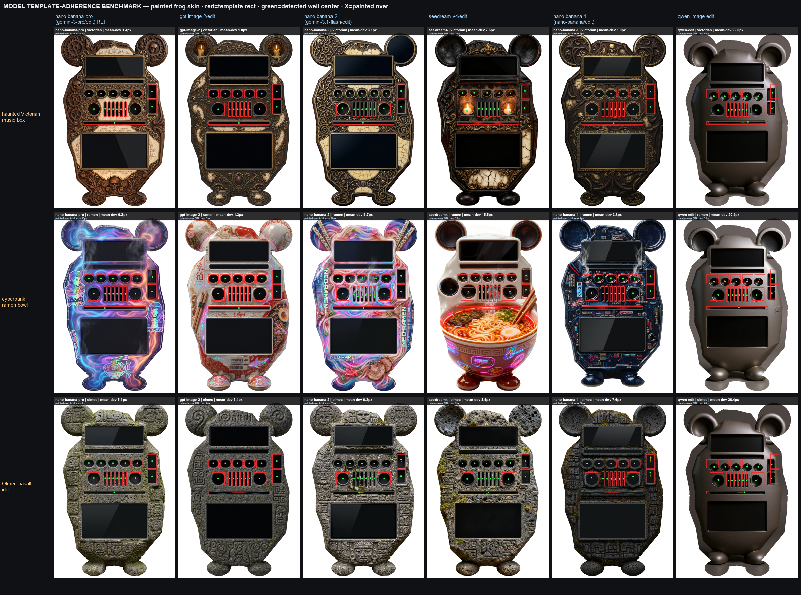

One sentence becomes a working, skeuomorphic music player that drives your real music. Here's the whole pipeline — what each step costs, how long it takes, and where it loops back on itself.
● done — what you get
The end of the loop is a real, working device. This is the actual generated Pebble ✦ player running live — real radial visualizer, real molded buttons, a working seek. Hover to hold it still; click the controls. It began as one sentence: “a cute frog puck on lilypad FM.”

● which model paints the controls
A benchmark of how well each image model keeps painted controls on the template (mean well deviation, lower is better): gpt-image-2 best (~2px drift) · nano-banana-pro safe (zero wells destroyed) · nano-banana-2 cheaper but more drift (6px) · seedream destroys wells. Full ranked table + contact sheet.
Estimates: the two image passes are the cost — the repo notes ≈ $0.30 fal · 30–90s for envelope+paint (fal gemini-3-pro-image). The director LLM and local raster/composite steps are cents-or-free. Auto-align adds one image-gen + CV pass. Loops let you iterate cheaply: reskin reuses the body (paint only), re-roll regenerates from a new idea, hand-edits in the template editor are instant.